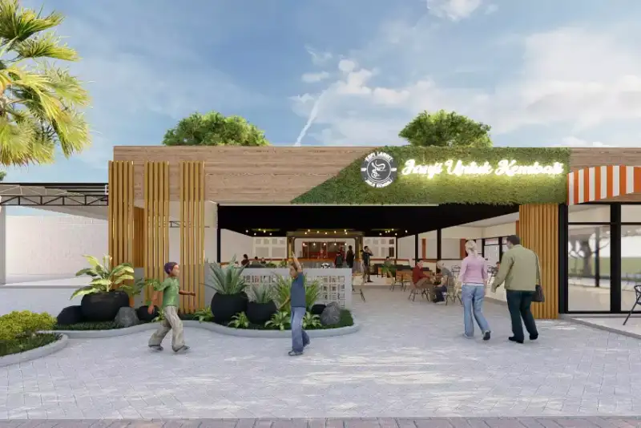

Daftar Isi
- Apa Itu Jasa Kontraktor Cafe Malang?
- Mengapa Cafe Membutuhkan Kontraktor Khusus?
- Bagaimana Cara Kerja Jasa Kontraktor Cafe di Malang?
- Faktor Apa Saja yang Memengaruhi Kualitas Kerja Kontraktor Cafe?
- Berapa Kisaran Biaya Jasa Kontraktor Cafe Malang?
- Apa Saja Kesalahan Umum Saat Memilih Kontraktor Cafe?
- Bagaimana Cakupan Wilayah Kerja Kontraktor Cafe di Malang Raya?
- FAQ
Jasa kontraktor cafe Malang adalah layanan pembangunan dan renovasi cafe mulai dari desain, struktur bangunan, hingga interior, yang dikerjakan kontraktor berpengalaman di wilayah Malang Raya untuk pengusaha F&B.
- Jasa kontraktor cafe Malang mencakup desain, konstruksi sipil, dan interior dalam satu paket kerja.
- Bisnis kafe di Kota Malang tumbuh sekitar 20 persen sepanjang 2023, sehingga permintaan jasa kontraktor cafe ikut meningkat.
- Memilih kontraktor yang tepat menentukan kualitas bangunan, efisiensi biaya, dan kecepatan waktu buka cafe.
- Biaya jasa kontraktor cafe dipengaruhi luas bangunan, konsep desain, material, dan kondisi lahan.
- Proses kerja kontraktor cafe umumnya melalui tahap konsultasi, desain, RAB, konstruksi, hingga serah terima.
Kota Malang dikenal sebagai salah satu pusat pertumbuhan bisnis kafe di Jawa Timur. Tren ini didorong oleh populasi mahasiswa yang besar, budaya nongkrong yang kuat, serta arus wisatawan yang terus datang ke Malang Raya. Kondisi ini membuat banyak pengusaha, baik pemula maupun investor berpengalaman, mencari jasa kontraktor cafe Malang yang mampu menerjemahkan konsep bisnis menjadi bangunan yang fungsional dan menarik secara visual.
Membangun cafe bukan sekadar mendirikan bangunan. Ada pertimbangan alur pelanggan, tata letak dapur, sirkulasi udara, pencahayaan, hingga kepatuhan terhadap standar keselamatan bangunan komersial. Karena itu, memilih kontraktor yang memahami kebutuhan spesifik industri F&B menjadi langkah penting sebelum cafe beroperasi.
Apa Itu Jasa Kontraktor Cafe Malang?
Jasa kontraktor cafe Malang adalah layanan profesional yang menangani perencanaan, pembangunan, atau renovasi bangunan cafe secara menyeluruh di wilayah Malang, Batu, dan sekitarnya.
Layanan ini umumnya mencakup tiga komponen utama. Pertama, tahap desain yang meliputi konsep ruang, gaya interior, dan denah fungsional. Kedua, tahap konstruksi sipil seperti pondasi, dinding, atap, dan instalasi listrik-air. Ketiga, tahap interior yang mencakup furnitur built-in, plafon, pencahayaan dekoratif, dan area dapur atau bar.
Sebagian kontraktor cafe di Malang menawarkan paket terintegrasi dari nol hingga siap pakai (turnkey), sementara sebagian lain hanya menangani salah satu tahap, misalnya khusus interior atau khusus struktur bangunan. Penting bagi calon pemilik cafe untuk memahami cakupan layanan sebelum menandatangani kesepakatan kerja.
Mengapa Cafe Membutuhkan Kontraktor Khusus, Bukan Kontraktor Umum?
Cafe membutuhkan kontraktor yang memahami kebutuhan operasional F&B karena kesalahan tata ruang dapur atau sirkulasi pelanggan dapat menghambat operasional harian setelah cafe berjalan.
Kontraktor umum biasanya berpengalaman membangun rumah tinggal atau ruko standar, namun belum tentu memahami kebutuhan teknis cafe seperti ventilasi dapur, instalasi grease trap, kapasitas listrik untuk peralatan barista, atau tata letak yang mendukung efisiensi pelayanan. Kontraktor yang berpengalaman menangani proyek F&B umumnya sudah memiliki referensi tata ruang yang teruji dari proyek-proyek sebelumnya, sehingga risiko revisi besar setelah bangunan jadi bisa ditekan.
Bagaimana Cara Kerja Jasa Kontraktor Cafe di Malang?
Cara kerja jasa kontraktor cafe di Malang umumnya berjalan melalui lima tahap utama, mulai dari konsultasi konsep hingga serah terima bangunan yang siap dioperasikan.
Tahap pertama adalah konsultasi awal, di mana pemilik cafe menyampaikan konsep bisnis, target pasar, dan anggaran yang tersedia. Tahap kedua adalah pembuatan desain dan gambar kerja, termasuk denah ruang, tampak bangunan, dan visualisasi interior. Tahap ketiga adalah penyusunan Rencana Anggaran Biaya (RAB) yang merinci kebutuhan material dan jasa. Tahap keempat adalah pelaksanaan konstruksi di lapangan, mulai dari pekerjaan struktur hingga finishing interior. Tahap kelima adalah serah terima bangunan, biasanya disertai masa garansi untuk perbaikan minor pasca-pembangunan.
Durasi setiap tahap dapat bervariasi tergantung skala proyek. Renovasi cafe skala kecil pada ruko sewa umumnya memakan waktu lebih singkat dibanding pembangunan cafe baru dari lahan kosong, karena tidak memerlukan pekerjaan struktur besar.
Faktor Apa Saja yang Memengaruhi Kualitas Kerja Kontraktor Cafe?
Kualitas kerja kontraktor cafe dipengaruhi oleh portofolio pengalaman, kejelasan kontrak kerja, kualitas material yang digunakan, serta komunikasi selama proses pembangunan berlangsung.
Beberapa faktor yang perlu diperhatikan calon klien antara lain:
- Portofolio proyek cafe sebelumnya, terutama yang memiliki kemiripan konsep atau skala.
- Kejelasan kontrak kerja, termasuk rincian item pekerjaan, jadwal, dan sistem pembayaran bertahap.
- Kualitas material yang direkomendasikan, disesuaikan dengan anggaran namun tetap memperhatikan daya tahan.
- Kemampuan komunikasi tim kontraktor dalam merespons revisi atau kendala di lapangan.
- Legalitas usaha kontraktor, termasuk badan usaha dan pengalaman menangani proyek komersial.
Menurut data yang dihimpun Badan Pendapatan Daerah Kota Malang, tercatat 3.442 restoran dan cafe yang terdaftar sebagai wajib pajak hingga Oktober 2022. Jumlah ini menunjukkan skala persaingan usaha F&B yang besar, sehingga kualitas fisik bangunan cafe menjadi salah satu faktor pembeda yang memengaruhi kenyamanan pelanggan dan citra merek.
Berapa Kisaran Biaya Jasa Kontraktor Cafe Malang?
Biaya jasa kontraktor cafe Malang umumnya dihitung berdasarkan luas bangunan, tingkat kerumitan desain, jenis material, dan apakah proyek berupa renovasi atau pembangunan baru dari nol.
Secara umum, biaya renovasi cafe pada ruko sewa cenderung lebih rendah dibanding pembangunan cafe baru di lahan kosong, karena struktur dasar bangunan sudah tersedia. Konsep desain yang menggunakan material custom, seperti furnitur built-in atau elemen dekoratif khusus, juga akan menambah komponen biaya dibanding konsep yang mengandalkan furnitur standar pabrikan. Pembahasan lebih rinci mengenai simulasi biaya dan faktor-faktornya dapat dibaca pada artikel Biaya Jasa Kontraktor Cafe Malang dan Faktor yang Memengaruhinya.
Karena angka pasti sangat bergantung pada spesifikasi tiap proyek, calon klien disarankan meminta penawaran RAB tertulis dari beberapa kontraktor sebagai pembanding sebelum mengambil keputusan.
Apa Saja Kesalahan Umum Saat Memilih Kontraktor Cafe?
Kesalahan umum saat memilih kontraktor cafe meliputi terlalu fokus pada harga termurah, tidak memeriksa portofolio, dan tidak memiliki kontrak kerja tertulis yang rinci.
Beberapa kesalahan yang sering terjadi di lapangan:
- Memilih kontraktor hanya berdasarkan harga penawaran termurah tanpa mengecek kualitas material.
- Tidak meminta portofolio proyek cafe sebelumnya untuk menilai gaya kerja kontraktor.
- Tidak menyepakati rincian item pekerjaan secara tertulis, sehingga rawan perselisihan di tengah proyek.
- Mengabaikan aspek teknis operasional cafe, seperti kapasitas listrik dan sirkulasi udara dapur.
- Tidak menyiapkan dana cadangan untuk kebutuhan tak terduga selama pembangunan.
Pembahasan lebih lengkap mengenai kriteria memilih kontraktor terpercaya dapat dilihat pada artikel Cara Memilih Jasa Kontraktor Cafe Terpercaya di Malang, sementara tahapan kerja teknis dibahas pada artikel Tahapan dan Proses Kerja Kontraktor Cafe di Malang.
Bagaimana Cakupan Wilayah Kerja Kontraktor Cafe di Malang Raya?
Kontraktor cafe di Malang umumnya melayani wilayah Kota Malang, Kabupaten Malang, dan Kota Batu, dengan sebagian menjangkau area Malang Raya secara lebih luas.
Wilayah kerja yang lebih luas biasanya memengaruhi biaya mobilisasi tim dan material, terutama untuk lokasi yang jauh dari pusat kota. Calon klien di area seperti Batu, Dau, atau Karangploso sebaiknya menanyakan kebijakan biaya mobilisasi sejak awal konsultasi agar tidak menjadi komponen biaya tersembunyi.